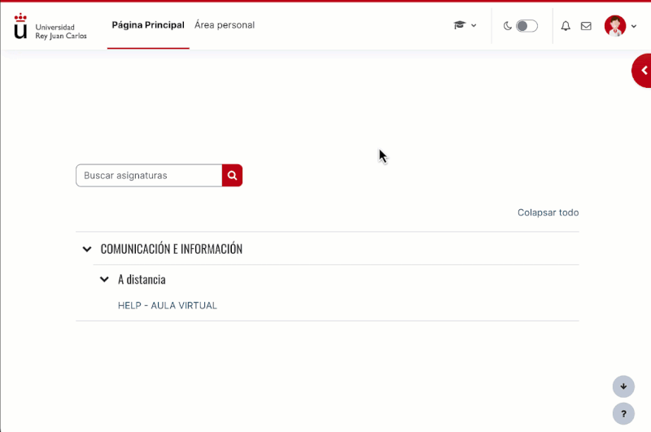
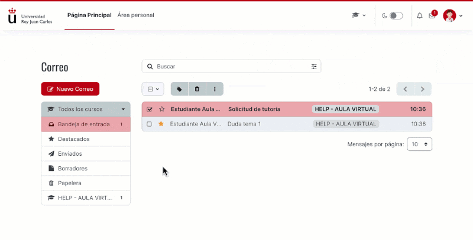
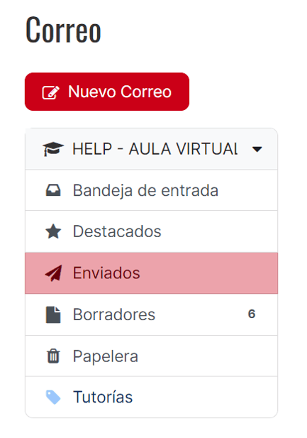
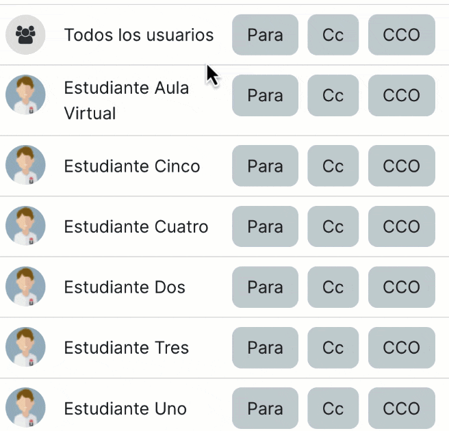

Explorau el plugin de Local Mail 2 per descobrir i esprémer les seves principals característiques. Sigau conscients de com us pot ajudar!

Per accedir al menú del correu, només heu de prémer sobre la icona de la capçalera de Moodle i apareixerà un desplegable amb diferents opcions.

Creau i modificau així com vulgueu tota mena d'etiquetes personalitzades per optimitzar l'organització i la classificació dels correus. Seleccionau i marcau de diferents maneres (com llegits, no llegits o favorits) aquells correus que vulgueu. També en podeu configurar les preferències de l'enviament de notificacions.

Podeu consultar totes les safates de missatges (d'entrada, destacats, enviats, esborranys i la paperera) de manera centralitzada, on tendreu accés a tots els missatges en ordre cronològic i degudament etiquetats de manera automàtica en funció de l'assignatura en qüestió. També podeu consultar directament les safates de missatges filtrades directament per assignatura. En aquest apartat us apareixeran fins i tot les etiquetes que heu configurat per organitzar els vostres correus.

Seleccionau com a destinataris tots els usuaris o només aquells que vulguis, fins i tot en còpia (CC) i còpia oculta (CCO). També podeu filtrar la cerca d'usuaris triant el rol d'aquell o aquells a qui preteneu enviar el missatge. Un cop seleccionats, redactau l’assumpte i el missatge, feis servir l'editor Atto integrat i adjuntau el fitxer que considereu.